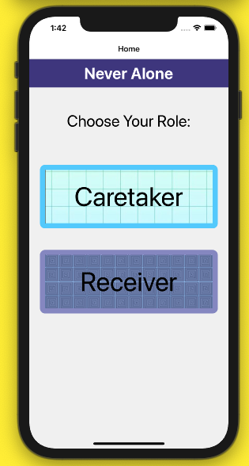
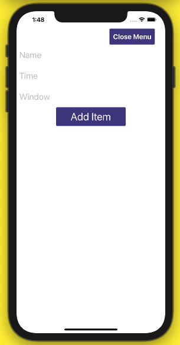
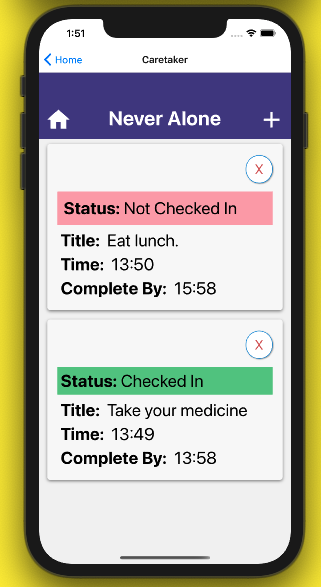
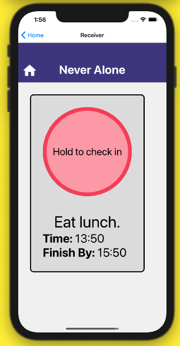
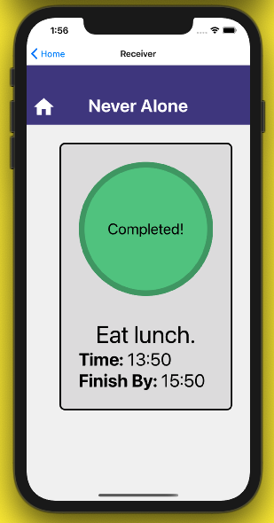

React Native, Expo, Babel, JavaScript
Never Alone is an application that allows people to check in on each other. The target audience is people caring for someone who is elderly or who is living with a disability, but it could also be utilized for anyone who wants to be able to check in on a friend or family member.
The aim of the application is to allow a user to quickly check in on how someone is doing, and if they have remembered a task such as taking medications, without being intrusive. Users can set times for check-ins and see if they are accomplished within a set time each day simply by checking their screen at any time.
This was a group project for the Turing School of Software and Design. We were able to select a project we wished to work on from suggestions put forward by our peers. Since this application seems best suited to be used from a phone or mobile device, we chose to work with React Native and Expo, which were new technologies for everyone on the team.
The landing page of this app allows the user to choose their role as either the caretaker or the care receiver.
As caretaker, the user has the ability to add, remove, and view tasks that the user should complete throughout that day. The status of each task reflects whether or not that task has been completed by the care receiver.
 As the care receiver, the user can view their tasks for the day and mark them as complete by holding down the button. This mode of communication allows the caretaker to guide the receiver without any loss of autonomy.
 